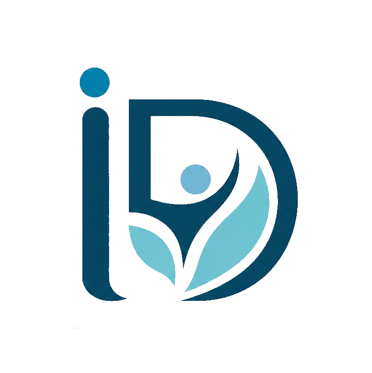

Atendimento Presencial
Um espaço reservado para o atendimento individual, com privacidade, acolhimento e tranquilidade.
- Ambiente reservado
- Atendimento individual
- Horários mediante agendamento
TERAPEUTA • TRG
Um atendimento acolhedor e individualizado para quem deseja compreender melhor o que sente e construir novos caminhos para lidar com os desafios da vida.
Cada pessoa possui uma história e um processo único. O acompanhamento não promete resultados imediatos ou cura, e a evolução pode variar de pessoa para pessoa.


SOBRE MIM
Sou Marcelo Marques, terapeuta, e meu trabalho parte de um princípio simples: cada pessoa merece ser ouvida com respeito, sem julgamentos e sem fórmulas prontas.
Utilizo a TRG como abordagem dentro do meu trabalho terapêutico, buscando oferecer um espaço seguro para conversar sobre experiências, emoções e situações que podem estar impactando a vida cotidiana.
O objetivo não é prometer uma transformação instantânea, mas acompanhar cada processo de forma individualizada, respeitando o tempo, os limites e a realidade de cada pessoa.
INSTITUTO DE DESENVOLVIMENTO E REABILITAÇÃO EMOCIONAL
O Instituto de Desenvolvimento e Reabilitação Emocional (IDERE) atua no desenvolvimento humano e emocional, ajudando pessoas e organizações a lidarem melhor com desafios emocionais, relacionamentos, liderança e tomada de decisões.
Nosso trabalho combina terapia, palestras, treinamentos e programas de desenvolvimento, promovendo maior inteligência emocional, equilíbrio e qualidade nas relações.
Contribuir para que pessoas e organizações desenvolvam maior consciência emocional e encontrem caminhos mais saudáveis para suas relações, decisões e resultados.
Acompanhamento voltado para empresários, empreendedores e profissionais que enfrentam pressão, conflitos, dificuldades emocionais e desafios relacionados à liderança.
Desenvolva equilíbrio emocional para tomar decisões com mais clareza e lidar melhor com os desafios da liderança.Programas personalizados para desenvolver líderes mais preparados para lidar com pessoas, conflitos e diferentes desafios do ambiente profissional.
Palestras para empresas, escolas, instituições e eventos sobre temas relacionados ao desenvolvimento humano e emocional.
Programas de formação e capacitação para pessoas interessadas em atuar com desenvolvimento emocional e relacionamentos, unindo conhecimento, prática e responsabilidade profissional.
Desenvolvendo pessoas para transformar relacionamentos, lideranças e resultados.
COMO POSSO TE ACOMPANHAR
Escolha o formato que melhor se adapta à sua rotina.
Um espaço reservado para o atendimento individual, com privacidade, acolhimento e tranquilidade.

Atendimento por videochamada para quem prefere realizar o processo de onde estiver, com praticidade e privacidade.
TEMAS QUE PODEMOS TRABALHAR
O atendimento pode abordar diferentes questões emocionais e situações que fazem parte da sua história.
COMO FUNCIONA
Você entra em contato pelo WhatsApp para tirar dúvidas e verificar a disponibilidade de atendimento.
No início, conversamos sobre sua demanda, seus objetivos e o que você espera encontrar no processo.
O trabalho é construído de maneira individualizada, respeitando seu momento e suas necessidades.
EXPERIÊNCIAS
Depoimentos devem ser publicados somente com autorização e nunca como garantia de que outra pessoa terá o mesmo resultado.
“O atendimento me ajudou a olhar para algumas situações com mais clareza e a perceber mudanças na forma como lido com o meu dia a dia.”
Paciente — nome autorizado“Encontrei um espaço onde consegui falar sobre o que estava sentindo sem me sentir julgado.”
Paciente — nome autorizado“O processo foi construído aos poucos e respeitando o meu momento. Foi importante ter esse espaço de escuta.”
Paciente — nome autorizadoVAMOS CONVERSAR?
Entre em contato para conhecer melhor o atendimento, tirar suas dúvidas e verificar a disponibilidade de horários.
◔ Falar pelo WhatsApp